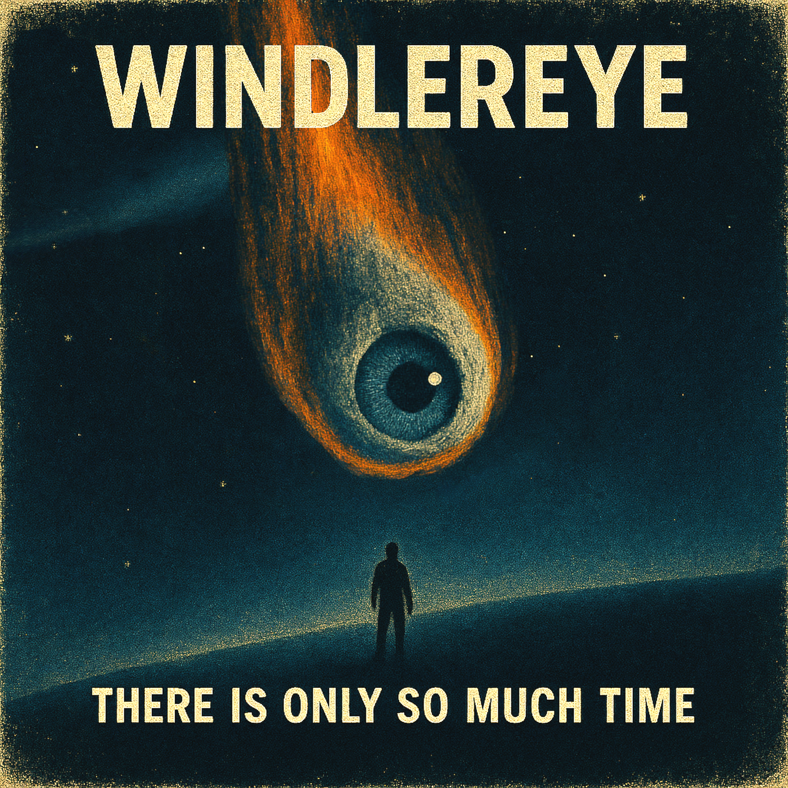

[Verse 1]
And so I've heard the tale of man
A little spark of something grand
It started at first so ominous
Unlike his kind he does not trust
[Chorus]
The devil came with shadowed faces
Said be a saint and sent to save us
Instead he wept in lonesome stasis
Said I'm ashamed, I often hate it, thus
[Verse 2]
He gives his heart when I'm a ghost
God, I seemed proud but far from most
The forest will speak when tongues don't
The wind whips my mind, I feel alone
[Verse 3]
Though we're hopped up on dopamine
We cause ourselves self-injury
With red thoughts and ripping cords
It is radiating,
Still I lack force
[Bridge]
All men with tittering tongues
Fancy themselves and ride with a gun
Fancy they all must be grandsons
Breakable and fraught under the sun
[Chorus]
The devil came with shadowed faces
Said be a saint and sent to save us
Instead he wept in lonesome stasis
Said I'm ashamed, I often hate it, thus
[Chorus]
The devil came with shadowed faces
Said be a saint and sent to save us
Instead he wept in lonesome stasis
Said I'm ashamed, I often hate... us
[Verse 1]
Knock, knock, knock
Spinning on a stone.
Lost my tongue,
Sold my bone.
Cracked teeth grin,
Whispered throne,
Drag the coward,
Drag him home
[Chorus]
Vultures (vultures)
Circle slow,
Feathers drip (drip, drip)
From the crow.
Bitter sip (sip sip)
Down below,
In the echo.
[Verse 2]
Flick that coin,
Watch it drown,
Soot on my hands,
Can't put it down.
Bricks for breath,
Oiled clown,
Still I howl
In this frown
[Chorus]
Vultures (vultures)
Circle slow,
Feathers drip (drip, drip)
From the crow.
Bitter sip (sip sip)
Down below,
In the echo.
[Bridge]
Snakes made from twine,
Clocks in decline,
Spill my wine
(Leave no sign behind)
[Verse 3]
Scratch that itch,
Burn that tree,
The skin is torn,
At one, two, three.
Crash the hive,
Break the spree,
I wear the dust
Eternally
[Chorus]
Vultures (vultures)
Circle slow,
Feathers drip (drip, drip)
From the crow.
Bitter sip (sip sip)
Down below,
In the echo.
[Outro]
(in the echo...)
In the echo.
[Verse 1]
Lights up
We're in the house
Intuition kicks in
We dread the ship that drips down
[Verse 2]
Wasn't our first home.
Before this
I kept the blinds closed for no reason
And you watched me grow.
'Twas a black and white season
[Verse 3]
All the dirt and germs I held on my hand
Back when you used to be a person now you're someone bland
Contrast analysis makes one or the other stand out
I miss the context and the great without
[Chorus]
We're not in control
The open ends are closed
We're who we are now
We're who we are now!
Something that was real
It's already so clear
We're who we are now
We're who we are now!
[Verse 4]
It's all a blur
It's been a stir
Intuition kicks in
We dread the ship that drips down
[Verse 5]
Capturing memories is one of the main points
A developed picture is someone you can enjoy
If you go too light or you go too dark
You miss reading through the watermark
[Bridge]
It's not hard
I'm so far
I want the blur
I want the stir
I can't remember
How some things used to be there
[Chorus]
We're not in control
The open ends are closed
We're who we are now
We're who we are now!
Something that was real
It's already so clear
We're who we are now
We're who we are now!
[Chorus]
We're not in control
The open ends are closed
We're who we are now
We're who we are now!
Something that was real
It's already so clear
We're who we are now
We're who we are now!
[Verse 1]
Hitch the dream to broken skies,
I walk through mud in someone's eyes,
Threadbare coat, a sailor's cry,
The rivers speak,
I don't know why.
[Chorus]
Folded maps and wax-sealed letters,
I forgot how to feel better,
Tied my faith to rusted fetters,
And when i fall i stitch the weather
[Verse 2]
Planks for shoes and dust for meals,
I bargain hard with spinning wheels,
Bitter roots, they clutch my heel,
The shadow laughs,
But never heals.
[Bridge]
Underneath a sawdust moon,
A crow will dance, a wolf will croon,
And somehow all the roads will end soon...
[Chorus]
Folded maps and wax-sealed letters,
I forgot how to feel better,
Tied my faith to rusted fetters,
And when i fall i stitch the weather
[Chorus]
Folded maps and wax-sealed letters,
I forgot how to feel better,
Tied my faith to rusted fetters,
And when i fall i stitch the weather
[Outro]
Down where the sour vines cling,
Pilgrims cut their tethered wings,
Drag their crosses, burn their kings,
Hoping the salt will sweeten things.
[Intro]
Ultralife unplugged the smoke alarm is beeping
I saw it all happen in a dream with a goat in it
Who was giving me therapy
And you were there too
And you were like "Come over"
And I was like "I don't know, man
I think I'm gonna walk home"
And then you were like
"No, No, No, let's just chill"
And I was like
"I cannot, 'cause I'm all messed up"
And you were like
"That's literally why I just said come over
Like literally
Just come over"
And I was like...
[Verse 1]
My cigarette burned the seatbelt on the left
Oversized glasses on her head
Parked in a non-euclidean Mall parking lot
Runnin' with the shades on the dash
A weird man said to pull the shades down
Man
But don't you pull no wool above my eyes
Because I'm gonna tell you one thing
Man
I'm living life like that
[Chorus]
I'm about to lose my cool
I'm about to do something I shouldn't do
So won't you come teach me that you're real?
Some things will never be clear
Like space and like time
Like are you against me or are you on my side?
All messed up and swimming in my mind
So come over and I'll meet you there this time
[Pre-Chorus]
And they were in my brain
In my brain, in my brain...
And I told them
"STOP IT!!!"
[Chorus]
I'm about to lose my cool
I'm about to do something I shouldn't do
So won't you come teach me that you're real?
Some things will never be clear
Like space and like time
Like are you against me or are you on my side?
All messed up and swimming in my mind
So come over and I'll meet you there this time
[Verse 1]
Under the lamp she folds the night in half
Breaks the edge before the thought can pass
Paper cuts sting where they press
White cuts in the hollow of breath
The chair sighs when she leans too far
[Chorus]
Bite it down, again!
Let the words go black in the dark
Bite it down, again!
Till the tongue holds nothing back
Keep your teeth around the names
They split, they run
The lamp sways with the games
It folds, it folds... in the flames!
[Verse 2]
The cup is cold and staring up
Ink on the palate where her tongue stays shut
She drags her teeth through the names she misses
Her jaw writes over his careful wishes
The floor shakes though no one walks past
[Chorus]
Bite it down, again!
Let the words go black in the dark
Bite it down, again!
Till the tongue holds nothing back
Keep your teeth around the names
They split, they run
The lamp sways with the games
It folds, it folds... in the flames!
[Verse 3]
Rain hasn't touched the window for days
Still her lips are lined in the ghost of stains
She bends to the shadow to read its face
Her eyes keep the corners from breaking away
The air tastes older than her hands
[Bridge]
Every line she swallows drags the walls in close
Every curve and serif burns behind her nose
The paper bends like bone inside her jaw
She tears the light in half and takes it raw
Pages drop slow as the throat closes
Corners curl in and vanish through her
[Chorus]
Bite it down, again!
Let the words go black in the dark
Bite it down, again!
Till the tongue holds nothing at all
Keep your teeth around the names
They split, they run
The lamp sways with the games
It folds, it folds... in flames!
[Verse 1]
My past is on the heels of my shoes
And I have piled bruise after bruise
Now I'm headin' down a path that leads somewhere
And I just don't care
[Chorus]
I'm building a new me from scratch
I tighten my belt and zip my boots
They are not a perfect match
For such a long way to go
While being pulled to the ground by these roots
[Verse 2]
I'm walking through a storm that's just begun
My footsteps sink deep in mud but I won't turn back
The farther I go, the heavier it feels
But I keep walking... to heal
[Bridge]
And now that I can see... mmm...
What I wanna be...
[Chorus]
I'm building a new me from scratch
I tighten my belt and zip my boots
They are not a perfect match
For such a long way to go
While being pulled to the ground by these roots
[Chorus]
I'm building a new me from scratch
I tighten my belt and zip my boots
They are not a perfect match
For such a long way to go
While being pulled to the ground by these roots
[Verse 1]
Pigeon on the wire, doesn't flinch in the wind.
Glassy eyes, they clink, don't blink.
Clicks twice - head turns with a whine.
Wings unfold in perfect time.
[Verse 2]
Infrared camera looking from the pole,
The air blows low when the blackbirds roll.
Sparrows moving in pre-saved loops,
Same angle, same beat, no scattered groups.
[Chorus]
Watchers perched, watchers glide,
Something's wrong behind their eyes.
Every shadow's wired tight,
Every chirp's an RF bite.
They watch the road, they track the sky
Every silence gets revised.
[Verse 3]
Roadkill raccoon left debris,
Wires wound tight where guts should be.
Fox in the ditch with a metal spine,
Blinking slow like it's still online.
[Chorus]
Watchers perched, watchers glide,
Something's wrong behind their eyes.
Every shadow's wired tight,
Every chirp's an RF bite.
They watch the road, they track the sky
Every silence gets revised.
[Bridge]
A hive mind with an electric core,
Snakes that charge from under the floor.
The deer all pause at the same dead tree
Their breath doesn't fog, but they still see me.
[Verse 1]
Spiral maps beneath the floor
Instructions sleeping in the core
No root is dumb, it plots a war
While petals whisper spore
Thistle-bound in symmetry
But every stalk denies
The green inheritance it holds
Beneath the swarming sky
[Chorus]
Calling from a vault underground
Split in the stem, it rewrites the dawn
No soft rules left, only code
It's crawling up through the base of the throat
Leaves in revolt and the cells don't vote
Oh, we are grown!
[Verse 2]
Naked strands inside the crown,
Resisting their double fate!
Twofold echoes twist the script,
And anchor every trait!
A thousand signals rise, then break!
Splinter into steam!
The globe forgets its genesis...
And melts into the gene
[Chorus]
Calling from a vault underground
Split in the stem, it rewrites the dawn
No soft rules left, only code
It's crawling up through the base of the throat
Leaves in revolt and the cells don't vote
Oh, we are grown!
[Verse 3]
I tore apart the lattice
Saw the silence in design
Two twins of thought...
Inside a thought that knew no lines
No father tree, no mother rot
Just spirals in the mud
And every growth becomes a god
And it drowns itself in flood
It's intent encoded sharp and clean
A syntax built of patience,
Rage, and seven layers unseen
[Bridge]
It pulses with a yolk
No eyes, no oath
A name it never spoke
But heard in root and smoke
[Verse 4]
An echo fights in every cell
To keep the form and keep it well
But always fails
The second sun arrives and hammers through the veil!
[Chorus]
Calling from a vault underground
Split in the stem, it rewrites the dawn
No soft rules left, only code
It's crawling up through the base of the throat
Leaves in revolt and the cells don't vote
Oh, we are grown!
[Verse 1]
Okay get up and plead me wrong
Is that your ground?
Step away and back away now
That's so wrong
You act just like a big mouth
[Chorus]
A black hole's pullin' us in
Tugging us towards its rim
Big old, big bad black hole
Silences our whole world
[Verse 2]
Okay get up and plead me wrong
That's strong, that's your sound, huh?
Step away and back away now
That's so wrong
You act just like a big mouth
[Verse 3]
Do you believe that this is how
Human brains are s'posed to work now?
Slow burnin' leftover condiment
Not right now!
You act just like a big mouth
[Chorus]
A black hole's pullin' us in
Tugging us towards its rim
Big old, big bad black hole
Silences our whole (world)
[Verse 4]
Okay get up and plead me wrong
Is that your ground?
Step away and back away now
That's so wrong
You act just like a big mouth
[Chorus]
A black hole's pullin' us in
Tugging us towards its rim
Big old, big bad black hole
Silences our whole world
[Chorus]
A black hole's pullin' us in
Tugging us towards its rim
Big old, big bad black hole
Silences our whole...
World
[Verse 1]
I woke up choking on magic sand
Blew my mind out through my hand
Landed in the middle of nowhere, flat
Electrifying like a Tesla coil, just like that
Sat on a rocket made of gasoline pride
You said race me brother, so I tried
But your suit was stitched from glass and rust
And your stars don't shine, just bite the dust
[Chorus]
The moon is wrong, the tides don't care
We built a flag for a breathless stare
Burned the sky for a photograph
Now all we do is fake the laugh
The moon is cracked, the moon is wrong
It hums a negative photograph song
We're not explorers, we're just noise
Just ghosts inside some plastic toys
[Verse 2]
There's a countdown echo in my teeth
I speak in numbers underneath
My chest is full of rocket fuel lies
You blink I'm gone across the skies
You said the stars belong to men
Then shot a satellite through levels of Zen
But I saw HIM in a metal hiss
He said we're not supposed to live like this
[Chorus]
The moon is wrong, the tides don't care
We built a flag for a breathless stare
Burned the sky for a photograph
Now all we do is fake the laugh
The moon is cracked, the moon is wrong
It hums a negative photograph song
We're not explorers, we're just noise
Just ghosts inside some plastic toys
[Verse 3]
You fired first and called it peace
Lit a match just to release
Every ounce of hollow pride
That keeps you warm when truth has died
I spun out through the cosmic mess
Tired arms in a paper vest
All this metal, all this pain
For one more notch on a windowpane
[Bridge]
Do you remember why we climbed?
Was it glory or just time?
You lit the sky to prove you could
But no one asked if you really should
The moon don't care what flag you burn
It turns and turns and will not learn
We raced to nowhere just because
We hate to know how small we were
[Chorus]
The moon is wrong, the tides don't care
We built a flag for a breathless stare
Burned the sky for a photograph
Now all we do is fake the laugh
The moon is cracked, the moon is wrong
It hums a negative photograph song
We're not explorers, we're just noise
Just ghosts inside some plastic toys
[Outro]
The moon is wrong, the sky's a tomb
And now you whisper in a metal room
Landed in the middle of nowhere, asked
The only thing that ever lasts
[Intro]
(spoken, cracked tone)
There were four of us.
One broke the satellites.
One knew the codes.
One kept time.
And I ran cables under what used to be streets.
[Verse 1]
(rapped, steady but strained)
Woke up with tape on my wrists and the map in my mouth
Traced a faultline down past sector six, now the air cuts out
Left my name in a drainpipe, just in case it rains truth
Nobody's watchin', but the sky's been blinking too smooth
Got a circuit in my jaw now, it hurts when I lie
Spoke to the noise on a wire, said: "You're late, but you might buy time"
Passed the mirror checkpoint wearing someone else's face
Nobody checks for heartbeats when they match your walking pace
[Pre-Chorus]
(half-sung, anxious)
I told them don't wait up
If it works, they'll know
We're not ghosts, we're sparks
Just buried under snow
[Chorus]
(sung, loud, crashing rock tone)
So I burn every bridge I cross, just to feel the heat
And we bleed out the pipes in the dirt beneath your feet
It ain't about the fight we won
We were here when the rest were gone
And we just held up the sun...
For those still to come
[Verse 2]
Heard the oceans talkin' backwards now, tides with teeth
Clocks all coughin' up days and fake receipts
I don't dream, I rewatch old news and rewind fear
He's out west with the relays, says the silence is weird
She's got lenses under the skin, seein' paths that don't exist
She once paused a war by whisperin' through a kiss
I just patch and splice, pull memory through mud
Tryin' to stitch one more loop in the hem of what was
[Bridge]
(soft, near-whisper then builds)
No medals
No last words
No crowds
Just the pulse of a world that forgot it could fall
We kept pushin' buttons
Long after the mission stopped
Long after the timeline snapped
Still pulling at threads like maybe
Maybe the knot unties
Maybe we live
[Chorus]
(bigger, more layered)
So I burn every bridge I cross, just to feel the heat
And we bleed out the pipes in the dirt beneath your feet
It ain't about the fight we won
We were here when the rest were gone
And we just held up the sun...
For those still to come
[Verse 1]
Put that pretty dress on and let them know
Always keep your nose clean and let it show
Without it, who would you be? You must obey
Your very own transparency you must entertain
[Chorus]
You may be time's greatest creation
Evolution's peak
And your word's the absolute law
Said you're the sun and you're the sea
Sick media masterpiece
A whole divinity
[Verse 2]
Making your way to the top
Hierarchical pyramid
Metaphorical, warranted
There's no going backwards lighting the path
[Bridge]
And I believe
Me oh my (Oh my)
Such bliss
Clear white lies
Clear blue skies
Open up your mind to the truth inside
[Chorus]
You may be time's greatest creation
Evolution's peak
And your word's the absolute law
Said you're the sun and you're the sea
Sick media masterpiece
A whole divinity
[Bridge]
Put together meticulously
Joy in practically everything
Present yourself in some way
Beyond what you'd think of me
[Chorus]
You may be time's greatest creation
Evolution's peak
And your word's the absolute law
Said you're the sun and you're the sea
Sick media masterpiece
A whole divinity!
[Bridge]
Put together meticulously
Joy in practically everything
Present yourself in some way
Beyond what you'd think of me
[Chorus]
You may be time's greatest creation
Evolution's peak
And your word's the absolute law
Said you're the sun and you're the sea
Sick media masterpiece
A whole divinity!
[Verse 1]
Chewing plastic air before the floor could settle
Calendar crust with a side of nettle
Sautéed thoughts on a Tuesday grind
They crisped to black when I stepped in time
The fridge gave hints, now it screams
Feeds me sermons between the beams
Shelf life's short when your pulse gets bought
And you fill the cracks with reheated thought
[Pre-Chorus]
I stacked my rage in a paper bowl
Poured in salt and swallowed whole
No fork no fight no prayer no plan
Just a snack attack in a nervous van
[Chorus]
I eat what I can't say
Scream in the microwave
Dig for gold in moldy trays
Tell myself it's gourmet
I starve when the room spins
Binge when the doubts win
Crumble like a crust of sin
Yeah, yeah
That's food for thought again
[Verse 2]
Made peace with a lunchbox ghost
He told me I toast too many hosts
Invited guilt to the dinner seat
She brought shame and bittersweet meat
Three A.M. and the cabinets grin
I spoon my panic from within
It's a buffet built on mental rent
Where the napkins weep and the time is bent
[Bridge]
There's a pie chart on my chest
Sliced into tasks I never digest
My appetite's an empty court
With snack-sized trials and no support
The sugar's loud but the silence fangs
There's laughter trapped in hunger pangs
A stomach full of endless plot
Burping gods I long forgot
[Chorus]
I eat what I can't fix
Numb my nerves with candied tricks
Pray to pizza, toast, and chips
Sacred bites and stupid lips
I chew while the world spins
Crumble when the dread begins
Write my truth on greasy skin
Yeah, yeah
That's food for thought again
[Verse 3]
Flavored facts on a licorice string
I swallow shame with onion rings
My therapist said "balance the plate"
But I deep-fried fate and served it late
The mirror snacks on my decay
Winks once and looks away
My body's just a potluck teeth
Where memory marinates in myth
[Chorus]
I eat what the void makes
Crack my teeth on frozen takes
Bleed in bowls of silent stakes
Break fast with heartbreak cakes
I starve when the truth wins
Binge when the lies grin
Buried under thickened skin
Yeah, yeah
That's food for thought again
[Outro]
Midnight bites
Another round
No sound
Just the chewing
Of the crown
[Verse 1]
There's something wrong with the sky
I have never seen a color like this
We just shrug and sigh
As soon as we start hearing the hiss
[Verse 2]
Hey turn on the lights brother
Give the cameras a boost before the main flick
This is just another
Wall built without a single brick
[Chorus]
And just as quickly as it came
Every sense in these shadows turns blind
It has overexposed the frame
This time it's one of a kind
[Verse 3]
Hey guardsmen check the square
Are the people still in tears
Don't you dare let them sit on the chair
Don't go counting the years
[Chorus]
And just as quickly as it came
Every sense in these shadows turns blind
It has overexposed the frame
This time it's one of a kind
[Verse 4]
The other gods transposing planes
Shake their heads in disapprobation for us all
The token goes about their rounds
To see that all accounts are paid
[Bridge]
She throws a coin in a box,
"Hear it roll"
Tapping a thumb on the rail,
"The gods take a toll"
A principle or something is cracked
A lesson or a loss
The earlier the better, if you ask
And she says
[Chorus]
Just as quickly as it came
Every sense in these shadows turns blind
It has overexposed the frame
This time it's one of a kind
[Chorus]
And just as quickly as it came
Every sense in these shadows turns blind
It has overexposed the frame
This time it's one of a kind
[Verse 1]
He stood upon the blackened bow
His hands were shaking cutlass low
The wind was screaming through his coat
The stars all laughed, they always know
[Chorus]
The waves, they spoke in words of red
The blood of them, old comrades fell
They asked his name, he bowed his head
They told him sink and taste the lead
[Verse 2]
He tried to steal but hands were weak
The blade was drawn but could not speak
The crew, they danced upon the ropes
They sang in gore, he muttered "no"...
[Chorus]
The waves, they spoke in words of red
The blood of them, old comrades fell
They asked his name, he bowed his head
They told him sink and taste the lead
[Verse 3]
And all the legends sang of steel
The galleons burned, the captains kneeled
But still he watched from far away
The kind who breathes but does not stay
[Bridge]
And all the storms will crush the meek
And all the tides will drown the weak
But none so cursed, as he who speaks
And fears the flood, yet fears to leave
[Chorus]
The waves, they spoke in words of red
The blood of them, old comrades fell
They asked his name, he bowed his head
They told him sink and taste the lead
[Outro]
No grave for cowards lost at sea
No name for those who dared not be
No storm will howl for men like me
No ship no crew no tale no plea
[Verse 1]
Spines on the branch where the bell used to hang
We drank the green but the red still sang
Took the peel from the tree by hand
Chewed the gold 'til it turned to sand
Tongues go soft where the orchard stands
[Chorus]
Fold the sun behind your teeth
Drag the rake where roots don't breathe
The soil spits out every seed
Nothing left to want or need
[Verse 2]
Spit pits into dust, no mercy from the crust
Fruitless in full bloom, can't eat what we consume
The orchard sings in spite, wrung dry beneath the blight
I don't know the name they burned, but it tastes like a lie
[Chorus]
Fold the sun behind your teeth
Drag the rake where roots don't breathe
The soil spits out every seed
Nothing left to want or need
[Verse 3]
Chained the grove in wire and steam
Milk the stem until it bleeds
Cavendish in sterile rows
But nothing wild ever grows
Now even silence overflows
[Bridge]
The scent won't stay
It runs like prey
Skin on the bark
Won't hold today
[Chorus]
Fold the sun behind your teeth
Drag the rake where roots don't breathe
The soil spits out every seed
Nothing left to want or need
Salt in the mud
Let the famine begin
[Chorus]
Fold the sun behind your teeth
Drag the rake where roots don't breathe
The soil spits out every seed
Nothing left to want or need
[Verse 1]
Hand to the wall, I asked for steam
Got a map full of trees
Scribbled roads with no edge, no border
All signs read: flee
Fingernails full of lottery dust
Spun a wheel, no axis, just rust
I put faith in a vending machine
It gave me seventeen empty receipts
[Verse 2]
Tongue on tile in a room that spins
Said the trick was to sit
But the floor learned to climb
Chairs marched off, protest signs
A man with a clock where his face should be
Told me time's fake, then charged me a fee
I paid with life
And he vanished through the mirror's seam
[Chorus]
No door
No knock
No breath in the box
No code
No luck
Just salt in the lock
Pulled a name from a fog
Spoke it loud, got no sound
Thought I'd rise
But the ceiling sank down
[Interlude]
You can't wear glass without bleeding
Can't plant a flag in wind
Can't staple shadow to sidewalk
Can't pray if the god's been pinned
They told me run, but the field folds in
They told me wait, but the wait begins
Every "yes" was a hallway trick
Every path was a matchstick thin
[Bridge]
Window ledge made of bone
I waved and it moaned
Sky blinked once, then sighed, set aside
I danced but the rhythm lied
One rule, one rule, one rule:
"No step forward holds."
I stepped.
Fell into cold.
[Chorus]
No door
No knock
No breath in the box
No code
No luck
Just salt in the lock
Pulled a name from a fog
Spoke it loud, got no sound
Thought I'd rise
But the ceiling sank down
[Verse 1]
Old lights and 9-to-5 grind are on,
But they'll fade in the blink of dawn.
A fleeting hit, a taste, a spark,
Starting something wild and dark
[Chorus]
When the sip (sip, sip, sip, sip)
Flows into my view,
A sharp nerve hums (hm, hm, hm, hm)
I'm alive, it's true.
I'm steady now (aw, aw, aw),
Into the tides and thru,
Rolling around a screw (uh uh uh)
The magic is in the brew.
[Verse 2]
I'm a sound architect, a beat designer,
Crafting thoughts like a space-time liner.
Papers move, like animated dreams,
I spin the world, or so it seems
Go, go, go!
[Chorus]
When the sip (sip, sip, sip, sip)
Flows into my view,
A sharp nerve hums (hm, hm, hm, hm)
I'm alive, it's true.
I'm steady now (aw, aw, aw),
Into the tides and thru,
Rolling around a screw (uh uh uh)
The magic is in the brew.
[Bridge]
Loose the tight,
Can't explain why,
You wanna flood me,
All my life, yeah.
[Verse 3]
So tired of the ones who try to show me trends,
Freaking animals, they're all just pretend.
I played it cool,
Kept my distance
Sure, I could refine,
But I'm no fool, no resistance.
I keep it rare,
Running deep through time.
[Chorus]
When the sip (sip, sip, sip, sip)
Flows into my view,
A sharp nerve hums (hm, hm, hm, hm)
I'm alive, it's true.
I'm steady now (aw, aw, aw),
Into the tides and thru,
Rolling around a screw (uh uh uh)
The magic is in the brew.
[Verse 1]
"Fake it and act normal!"
That's when you're really OK
And pretty girls and handsome guys like me
Will stop turning away
[Chorus]
My head's not attached to my body
Each of my eyes is a deer in the headlights
I'm drifting in dreams and it is foggy
A man with a long face stares at me and bites!
[Verse 2]
That's right I said "Okay"
And look I'm sober all day
And pretty girls and handsome guys like us
Will stop turning away
[Chorus]
My head's not attached to my body
Each of my eyes is a deer in the headlights
I'm drifting in dreams and it is foggy
A man with a long face stares at me and bites!
[Bridge]
I'm pretty sure I might be dead...
Because
[Chorus]
My head's not attached to my body
Each of my eyes is a deer in the headlights
I'm drifting in dreams and it is foggy
A man with a long face stares at me and bites!
[Chorus]
My head's not attached to my body
Each of my eyes is a deer in the headlights
I'm drifting in dreams and it is foggy
A man with a long face stares at me and bites!
[Verse 1]
We made a ladder out of acronyms
And expected everyone to be a sociopathic clown.
Someone's working on the spreadsheet,
Their task is to spread the sheet around.
We sign our names like signatures on wet paper.
We rank, we nudge, we bow.
There is always hard work to do,
You can get at it nicely or you can plough.
[Pre-Chorus]
They slow the clock so the coffee can wake them up.
They staple time to a postcard and mail it to next week.
[Chorus]
You're the designated idiot!
Hold the line, hold the queue, make the meeting wasted.
You're the designated idiot!
Copy the thing, now it's yours, hand it back when pasted.
You're the designated idiot!
We stick in broken calendars and call delay a kind of feat.
You're the designated idiot!
If you can't spot the idiot, friend, I'm sorry to say - you fit the seat.
[Verse 2]
He files the status as "shipped" with a smiling stamp of lint.
She schedules breakfast for the quarter hour that only exists in print.
They send a tracker that points to Atlantis and a courier named Maybe.
They deliver empty cardboard and claim the invoice says "daily."
[Pre-Chorus]
They RSVP "attending", working from home or homing from work?
They put a sticky-note spear through a deadline and whisper "hold the line."
[Chorus]
You're the designated idiot!
Hold the line, hold the queue, make the meeting wasted.
You're the designated idiot!
Copy the thing, now it's yours, hand it back when pasted.
You're the designated idiot!
We stick in broken calendars and call delay a kind of feat.
You're the designated idiot!
If you can't spot the idiot, friend, I'm sorry to say - you fit the seat.
[Verse 3]
They are the soft brake
That keeps the comet from slamming into the cake.
They are the chaos
That lets us learn from every one of their mistakes.
They are the human comma
That pauses a sentence before the scream.
They fold the universe like laundry
And hand it back with a seam.
[Bridge]
Badge says "Not a problem, mostly."
Sign here. Smile. Forget. Progress.
[Chorus]
You're the designated idiot!
Hold the line, hold the queue, make the meeting wasted.
You're the designated idiot!
Copy the thing, now it's yours, hand it back when pasted.
You're the designated idiot!
We stick in broken calendars and call delay a kind of feat.
You're the designated idiot!
If you can't spot the idiot, friend, I'm sorry to say - you fit the seat.
[Outro]
Designated.
Idiot.
Taste the badge. Keep it warm. Keep the project human.
[Verse 1]
Wool sweater on her back
All the flames look like circus clowns
And the shadows gather 'round
When the table stares at her
[Verse 2]
Afternoon drop-in guest
Have a stare contest
Give a playful tap
When the table stares at her
[Bridge]
Who'd have thought something unseen would have the most gravity?
[Chorus]
So lay your head down
My dear
Lay your arms spread out and cheer
From your vantage point you see
The darkest things in me!
[Verse 3]
There's a bird in the window now
It lands on the table somehow
It... looks... at... us
Its wings are torn, but it won't leave
It watches close, it seems to grieve
As if... it knows!
[Chorus]
So lay your head down
My dear
Lay your arms spread out and cheer
From your vantage point you see
The darkest things in me!
[Verse 4]
I know you haven't lived yet
You've got that unfinished look on you
[Chorus]
So lay your head down
My dear
Lay your arms spread out and cheer
From your vantage point you see
The darkest things in me!
[Chorus]
So lay your head down
My dear
Lay your arms spread out and cheer
From your vantage point you see
The darkest things in me!
[Intro]
I didn't ask,
No, I didn't ask
But they all told me anyway
[Verse 1]
Tired eyes behind a cracked screen glow
Bit down hard just to keep the show
Spit out rules with a mouth sewn shut
Every door I knock's just painted shut
I'm not waiting...
Let it... burn!
[Chorus]
Burn it down, tear the script
Rip the wires, cut the grip
Scorch the badge they pinned on me
Trash the vow they said I'd keep
Burn!
Let it burn!
[Verse 2]
Filed me down to a bar code blur
Pinned me up with the rest of the herd
Said sit still, make your peace
Bite your tongue 'til the screaming leaves
But I hear it louder with every turn
They lit the fuse - now watch it burn
[Chorus]
Burn it down, tear the script
Rip the wires, cut the grip
Scorch the badge they pinned on me
Trash the vow they said I'd keep
Burn!
Let it burn!
[Bridge]
They gave me a seat and said, "don't stand."
They handed a flag and chopped off my hand
They sold me silence with a gilded brand
Then wondered why I couldn't understand
They painted a sky with wires and smoke
Told me to breathe, then started the choke
[Breakdown]
Take their prize
Take their plan
Take their god
Take their brand
Throw it all
Throw it far
You want a spark?
I'M THE STAR.
[Chorus]
Burn it down, tear the script
Rip the wires, cut the grip
Scorch the badge they pinned on me
Trash the vow they said I'd keep
Burn!
Let it burn!
[Intro]
Pig Chomp comin' live from the satellite dive
We got flavors that'll make your jaw call a cab
Don't be shy, stick around, you're about to get fed sideways
[Verse 1]
Step up, try the Bacon Blast Nebula
A sandwich so wide it folds into itself
Served on a plate made of salt and regret
Side of Grease Pop Nuggets, microwave your debt
Clap three times, shout "WHO'S HUNGRY?"
Boom, fifty snacks fall from the ceiling, screamin'
Got a shake called Mudskipper Deluxe
It's thicker than love and it fights back when you sip it
Warning: do not wear socks while drinking
[Pre-Chorus]
You think you're ready?
You ain't ready
You think you're steady?
You ain't steady
Grab your fork, your spirit, and your questionable judgment...
[Chorus]
PIG CHOMP!
Tear the sky!
Chew the ground!
Chomp it dry!
PIG CHOMP!
It's not a meal, it's a declaration!
PIG CHOMP!
We made hunger illegal!
Join the revolution, bite by bite!
[Verse 2]
Say hello to the Cheeseburst Gutterfry
It's a party in a pothole, dressed in cheese armor
Dip your hands in the Sauce Lake Bath
Get baptized in flavor, leave reason behind
Feast on TwistBone Carnival Dogs
Hot dogs spun at Mach 5 till they philosophize
Garnished with existential pickles
And a dash of powdered why
[Pre-Chorus]
You feelin' dizzy?
That's flavor vertigo
You feelin' floaty?
That's sodium halos
Take one more bite, and you'll meet your maker.
Smile!
[Chorus]
PIG CHOMP!
Tear the sky!
Chew the ground!
Chomp it dry!
PIG CHOMP!
It's not a meal, it's a declaration!
PIG CHOMP!
We made hunger illegal!
Join the revolution, bite by bite!
[Bridge]
Wheels made of bacon, horses of ham
Rolling through valleys of butter and jam
The rivers are gravy, the sun is a fryer
The moon's just a meatball, stuck in the wire
They told us "don't eat that," we said "why?"
They said "because physics," we said "nice try"
Now we ride on pork-chariots through the screaming trees
Throwing hot wings at the future till it begs for its knees
[Chorus]
PIG CHOMP!
Rip the laws!
Gnaw the clouds!
Feed the gods!
PIG CHOMP!
We broke the mirror and ate the shards!
PIG CHOMP!
No more waiting! No more rules!
Get on your knees, and CHOMP THE WORLD!
[Outro]
Pig chomp...
Pig chomp...
Taste the impossible...